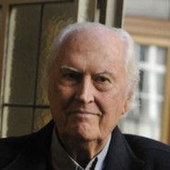
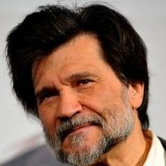

157 films
Documentary
Documentary uses real people and places to examine the world. Lumière actualities and Flaherty's Nanook of the North began it; Vertov's Man with a Movie Camera and Grierson's British school made it an art; direct cinema and cinéma vérité in the 1960s brought handheld intimacy; Lanzmann's Shoah and Wiseman's institutional portraits showed its power at length. Today it includes essay films, personal portraits and investigative work.
- Where
- Britain, the United States, France, the Soviet Union, Germany
- When
- From 1895; major waves in the 1920s, 1960s and since 2000
- Key figures
- Robert Flaherty, Dziga Vertov, Jean Rouch, Chris Marker, Frederick Wiseman, Claude Lanzmann
- Landmark films
- Nanook of the North (1922), Man with a Movie Camera (1929), Shoah (1985), Sans soleil (1983)
- Legacy
- Gave cinema a way to witness, argue and remember
What to look for
- Observation versus staged reconstruction
- Interviews and archive material
- Voice-over and essayistic structure
- Access to closed worlds
- The filmmaker's presence or absence
Directors with the most films in this genre
Wang Bing9 films Werner Herzog9 filmsChris Marker7 filmsFrederick Wiseman7 films
Werner Herzog9 filmsChris Marker7 filmsFrederick Wiseman7 films Agnès Varda6 filmsNicolas Philibert6 filmsClaude Lanzmann5 films
Agnès Varda6 filmsNicolas Philibert6 filmsClaude Lanzmann5 films Dziga Vertov5 filmsChantal Akerman4 filmsGianfranco Rosi4 filmsLaura Poitras4 films
Dziga Vertov5 filmsChantal Akerman4 filmsGianfranco Rosi4 filmsLaura Poitras4 films Michael Moore4 filmsPatricio Guzmán4 films
Michael Moore4 filmsPatricio Guzmán4 films Abbas Kiarostami3 filmsJames Algar3 films
Abbas Kiarostami3 filmsJames Algar3 films Louis Lumière3 films
Louis Lumière3 films Walter Ruttmann3 films
Walter Ruttmann3 films Wim Wenders3 films
Wim Wenders3 films Alexander Nanau2 filmsAmos Gitai2 films
Alexander Nanau2 filmsAmos Gitai2 films Corneliu Porumboiu2 filmsDušan Makavejev2 films
Corneliu Porumboiu2 filmsDušan Makavejev2 films
Werner Herzog9 filmsChris Marker7 filmsFrederick Wiseman7 filmsAgnès Varda6 filmsNicolas Philibert6 filmsClaude Lanzmann5 filmsDziga Vertov5 filmsChantal Akerman4 filmsGianfranco Rosi4 filmsLaura Poitras4 filmsMichael Moore4 filmsPatricio Guzmán4 filmsAbbas Kiarostami3 filmsJames Algar3 filmsLouis Lumière3 filmsWalter Ruttmann3 filmsWim Wenders3 filmsAlexander Nanau2 filmsAmos Gitai2 filmsCorneliu Porumboiu2 filmsDušan Makavejev2 films
Fernando Solanas2 filmsJacques Cousteau2 filmsSee all 79 directors
Jean Vigo2 films Jia Zhangke2 films
Jia Zhangke2 films Kaouther Ben Hania2 films
Kaouther Ben Hania2 films Mani Kaul2 films
Mani Kaul2 films Spike Lee2 films
Spike Lee2 films Alain Resnais1 filmAndrea Arnold1 filmApichatpong Weerasethakul1 filmAri Folman1 film
Alain Resnais1 filmAndrea Arnold1 filmApichatpong Weerasethakul1 filmAri Folman1 film Ava DuVernay1 film
Ava DuVernay1 film Benjamin Christensen1 film
Benjamin Christensen1 film Canan Gerede1 film
Canan Gerede1 film Carlos Saura1 film
Carlos Saura1 film Derek Jarman1 film
Derek Jarman1 film Elem Klimov1 film
Elem Klimov1 film Emir Kusturica1 filmFernando Birri1 filmFernando Pérez1 filmFérid Boughedir1 film
Emir Kusturica1 filmFernando Birri1 filmFernando Pérez1 filmFérid Boughedir1 film Giuseppe De Santis1 film
Giuseppe De Santis1 film Giuseppe Tornatore1 filmHaile Gerima1 film
Giuseppe Tornatore1 filmHaile Gerima1 film Hany Abu-Assad1 film
Hany Abu-Assad1 film Henri-Georges Clouzot1 film
Henri-Georges Clouzot1 film Jafar Panahi1 film
Jafar Panahi1 film Jean-Luc Godard1 filmJoaquim Pedro de Andrade1 film
Jean-Luc Godard1 filmJoaquim Pedro de Andrade1 film José Padilha1 film
José Padilha1 film Kim Ki-duk1 film
Kim Ki-duk1 film Kleber Mendonça Filho1 filmKon Ichikawa1 film
Kleber Mendonça Filho1 filmKon Ichikawa1 film Lars von Trier1 film
Lars von Trier1 film Lindsay Anderson1 film
Lindsay Anderson1 film Luis Buñuel1 filmManoel de Oliveira1 filmMargarethe von Trotta1 film
Luis Buñuel1 filmManoel de Oliveira1 filmMargarethe von Trotta1 film Masaki Kobayashi1 filmMati Diop1 film
Masaki Kobayashi1 filmMati Diop1 film Mikhail Kalatozov1 film
Mikhail Kalatozov1 film Mohsen Makhmalbaf1 film
Mohsen Makhmalbaf1 film Naomi Kawase1 film
Naomi Kawase1 film Nicholas Ray1 film
Nicholas Ray1 film Orson Welles1 filmPayal Kapadia1 filmRadu Jude1 filmRyusuke Hamaguchi1 filmSafi Faye1 film
Orson Welles1 filmPayal Kapadia1 filmRadu Jude1 filmRyusuke Hamaguchi1 filmSafi Faye1 film Sarah Polley1 film
Sarah Polley1 film Shohei Imamura1 film
Shohei Imamura1 film Steve McQueen1 filmTerence Davies1 filmUlrich Seidl1 film
Steve McQueen1 filmTerence Davies1 filmUlrich Seidl1 film Vsevolod Pudovkin1 film
Vsevolod Pudovkin1 film
Jia Zhangke2 filmsKaouther Ben Hania2 filmsMani Kaul2 filmsSpike Lee2 filmsAlain Resnais1 filmAndrea Arnold1 filmApichatpong Weerasethakul1 filmAri Folman1 filmAva DuVernay1 filmBenjamin Christensen1 filmCanan Gerede1 filmCarlos Saura1 filmDerek Jarman1 filmElem Klimov1 filmEmir Kusturica1 filmFernando Birri1 filmFernando Pérez1 filmFérid Boughedir1 filmGiuseppe De Santis1 filmGiuseppe Tornatore1 filmHaile Gerima1 filmHany Abu-Assad1 filmHenri-Georges Clouzot1 filmJafar Panahi1 filmJean-Luc Godard1 filmJoaquim Pedro de Andrade1 filmJosé Padilha1 filmKim Ki-duk1 filmKleber Mendonça Filho1 filmKon Ichikawa1 filmLars von Trier1 filmLindsay Anderson1 filmLuis Buñuel1 filmManoel de Oliveira1 filmMargarethe von Trotta1 filmMasaki Kobayashi1 filmMati Diop1 filmMikhail Kalatozov1 filmMohsen Makhmalbaf1 filmNaomi Kawase1 filmNicholas Ray1 filmOrson Welles1 filmPayal Kapadia1 filmRadu Jude1 filmRyusuke Hamaguchi1 filmSafi Faye1 filmSarah Polley1 filmShohei Imamura1 filmSteve McQueen1 filmTerence Davies1 filmUlrich Seidl1 filmVsevolod Pudovkin1 film
Víctor Erice1 filmŽelimir Žilnik1 filmOften combined with
157 films, best rated first
- Shoah 1985 · Claude Lanzmann · IMDb 8.7
- Night and Fog 1956 · Alain Resnais · IMDb 8.6
- The Salt of the Earth 2014 · Wim Wenders · IMDb 8.4
- Man with a Movie Camera 1929 · Dziga Vertov · IMDb 8.3
- The Battle of Chile 1979 · Patricio Guzmán · IMDb 8.3
- 13th 2016 · Ava DuVernay · IMDb 8.2
- Ennio 2021 · Giuseppe Tornatore · IMDb 8.2
- Welfare 1975 · Frederick Wiseman · IMDb 8.2
- Collective 2019 · Alexander Nanau · IMDb 8.1
- Citizenfour 2014 · Laura Poitras · IMDb 8.0
- Dead Souls 2018 · Wang Bing · IMDb 8.0
- Little Dieter Needs to Fly 1997 · Werner Herzog · IMDb 8.0
- Sicko 2007 · Michael Moore · IMDb 8.0
- The Beaches of Agnès 2008 · Agnès Varda · IMDb 8.0
- Toto and His Sisters 2014 · Alexander Nanau · IMDb 8.0
- Waltz with Bashir 2008 · Ari Folman · IMDb 8.0
- Bowling for Columbine 2002 · Michael Moore · IMDb 7.9
- Hospital 1970 · Frederick Wiseman · IMDb 7.9
- Land of Silence and Darkness 1971 · Werner Herzog · IMDb 7.9
- Lessons of Darkness 1992 · Werner Herzog · IMDb 7.9
- Til Madness Do Us Part 2013 · Wang Bing · IMDb 7.9
- 4 Little Girls 1997 · Spike Lee · IMDb 7.8
- A Grin Without a Cat 1977 · Chris Marker · IMDb 7.8
- Bus 174 2002 · José Padilha · IMDb 7.8
- Faces Places 2017 · Agnès Varda · IMDb 7.8
- Homework 1989 · Abbas Kiarostami · IMDb 7.8
- Le joli mai 1963 · Chris Marker · IMDb 7.8
- My Best Fiend 1999 · Werner Herzog · IMDb 7.8
- The Last Bolshevik 1993 · Chris Marker · IMDb 7.8
- To Be and to Have 2002 · Nicolas Philibert · IMDb 7.8
- Encounters at the End of the World 2007 · Werner Herzog · IMDb 7.7
- F for Fake 1973 · Orson Welles · IMDb 7.7
- Fengming: A Chinese Memoir 2007 · Wang Bing · IMDb 7.7
- Five 2003 · Abbas Kiarostami · IMDb 7.7
- Grizzly Man 2005 · Werner Herzog · IMDb 7.7
- Sans soleil 1983 · Chris Marker · IMDb 7.7
- The Gleaners and I 2000 · Agnès Varda · IMDb 7.7
- Titicut Follies 1967 · Frederick Wiseman · IMDb 7.7
- Tokyo Olympiad 1965 · Kon Ichikawa · IMDb 7.7
- Buena Vista Social Club 1999 · Wim Wenders · IMDb 7.6
- Daguerréotypes 1976 · Agnès Varda · IMDb 7.6
- Every Little Thing 1997 · Nicolas Philibert · IMDb 7.6
- Häxan 1922 · Benjamin Christensen · IMDb 7.6
- Nostalgia for the Light 2010 · Patricio Guzmán · IMDb 7.6
- Pictures of Ghosts 2023 · Kleber Mendonça Filho · IMDb 7.6
- Pina 2011 · Wim Wenders · IMDb 7.6
- The Hour of the Furnaces 1968 · Fernando Solanas · IMDb 7.6
- The Pearl Button 2015 · Patricio Guzmán · IMDb 7.6
- Tokyo Trial 1983 · Masaki Kobayashi · IMDb 7.6
- All the Beauty and the Bloodshed 2022 · Laura Poitras · IMDb 7.5
- Fahrenheit 9/11 2004 · Michael Moore · IMDb 7.5
- High School 1968 · Frederick Wiseman · IMDb 7.5
- Kenedi Goes Back Home 2003 · Želimir Žilnik · IMDb 7.5
- Roger & Me 1989 · Michael Moore · IMDb 7.5
- Salt for Svanetia 1930 · Mikhail Kalatozov · IMDb 7.5
- Statues Also Die 1953 · Chris Marker · IMDb 7.5
- Stories We Tell 2012 · Sarah Polley · IMDb 7.5
- The Mystery of Picasso 1956 · Henri-Georges Clouzot · IMDb 7.5
- Below Sea Level 2008 · Gianfranco Rosi · IMDb 7.4
- Cave of Forgotten Dreams 2010 · Werner Herzog · IMDb 7.4
- City Hall 2020 · Frederick Wiseman · IMDb 7.4
- Flamenco 1995 · Carlos Saura · IMDb 7.4
- Ford Transit 2002 · Hany Abu-Assad · IMDb 7.4
- Four Daughters 2023 · Kaouther Ben Hania · IMDb 7.4
- Letter from Siberia 1957 · Chris Marker · IMDb 7.4
- Mur Murs 1981 · Agnès Varda · IMDb 7.4
- The Five Obstructions 2003 · Lars von Trier · IMDb 7.4
- This Is Not a Film 2011 · Jafar Panahi · IMDb 7.4
- World Without Sun 1964 · Jacques Cousteau · IMDb 7.4
- Arrival of a Train at La Ciotat 1896 · Louis Lumière · IMDb 7.3
- Blue 1993 · Derek Jarman · IMDb 7.3
- Crude Oil 2008 · Wang Bing · IMDb 7.3
- Into the Abyss 2011 · Werner Herzog · IMDb 7.3
- Land Without Bread 1933 · Luis Buñuel · IMDb 7.3
- National Gallery 2014 · Frederick Wiseman · IMDb 7.3
- News from Home 1977 · Chantal Akerman · IMDb 7.3
- The Last of the Unjust 2013 · Claude Lanzmann · IMDb 7.3
- The Living Desert 1953 · James Algar · IMDb 7.3
- Three Sisters 2012 · Wang Bing · IMDb 7.3
- À propos de Nice 1930 · Jean Vigo · IMDb 7.3
- Douro, Faina Fluvial 1931 · Manoel de Oliveira · IMDb 7.2
- From the East 1993 · Chantal Akerman · IMDb 7.2
- La Danse 2009 · Frederick Wiseman · IMDb 7.2
- Of Time and the City 2008 · Terence Davies · IMDb 7.2
- Suite Habana 2003 · Fernando Pérez · IMDb 7.2
- The Cordillera of Dreams 2019 · Patricio Guzmán · IMDb 7.2
- The Oath 2010 · Laura Poitras · IMDb 7.2
- 24 City 2008 · Jia Zhangke · IMDb 7.1
- A Man Vanishes 1967 · Shohei Imamura · IMDb 7.1
- A Sixth Part of the World 1926 · Dziga Vertov · IMDb 7.1
- Berlin: Symphony of a Great City 1927 · Walter Ruttmann · IMDb 7.1
- Camera d'Afrique 1983 · Férid Boughedir · IMDb 7.1
- Cow 2021 · Andrea Arnold · IMDb 7.1
- Field Diary 1982 · Amos Gitai · IMDb 7.1
- Innocence Unprotected 1968 · Dušan Makavejev · IMDb 7.1
- Letter from My Village 1975 · Safi Faye · IMDb 7.1
- The Vanishing Prairie 1954 · James Algar · IMDb 7.1
- Youth (Spring) 2023 · Wang Bing · IMDb 7.1
- Bitter Money 2016 · Wang Bing · IMDb 7.0
- Embracing 1992 · Naomi Kawase · IMDb 7.0
- Garrincha: Alegria do Povo 1962 · Joaquim Pedro de Andrade · IMDb 7.0 · Documentary
- Level Five 1997 · Chris Marker · IMDb 7.0 · Documentary, Romance, War
- My Country, My Country 2006 · Laura Poitras · IMDb 7.0 · Documentary
- I Wish I Knew 2010 · Jia Zhangke · IMDb 6.9 · Documentary, History
- Kino-Eye 1924 · Dziga Vertov · IMDb 6.9 · Documentary
- Melody of the World 1929 · Walter Ruttmann · IMDb 6.9 · Documentary
- Sport, Sport, Sport 1970 · Elem Klimov · IMDb 6.9 · Comedy, Documentary
- The Eleventh Year 1928 · Dziga Vertov · IMDb 6.9 · Documentary
- The Silent World 1956 · Jacques Cousteau · IMDb 6.9 · Adventure, Documentary
- 24 Frames 2017 · Abbas Kiarostami · IMDb 6.8 · Documentary
- Arirang 2011 · Kim Ki-duk · IMDb 6.8 · Documentary, Drama
- Enthusiasm 1931 · Dziga Vertov · IMDb 6.8 · Documentary
- Every Day Except Christmas 1957 · Lindsay Anderson · IMDb 6.8 · Documentary
- On the Adamant 2023 · Nicolas Philibert · IMDb 6.8 · Documentary
- Suvorov 1941 · Vsevolod Pudovkin · IMDb 6.8 · Biography, Documentary, Drama
- Dahomey 2024 · Mati Diop · IMDb 6.7 · Documentary
- Fire at Sea 2016 · Gianfranco Rosi · IMDb 6.7 · Documentary
- In the Basement 2014 · Ulrich Seidl · IMDb 6.7 · Documentary
- Maradona by Kusturica 2008 · Emir Kusturica · IMDb 6.7 · Documentary
- Mysterious Object at Noon 2000 · Apichatpong Weerasethakul · IMDb 6.7 · Documentary, Drama, Fantasy
- Searching for Ingmar Bergman 2018 · Margarethe von Trotta · IMDb 6.7 · Documentary
- Taris 1931 · Jean Vigo · IMDb 6.7 · Documentary
- Fata Morgana 1971 · Werner Herzog · IMDb 6.6 · Documentary, Drama
- Giorni di gloria 1945 · Giuseppe De Santis · IMDb 6.6 · Documentary
- House 1980 · Amos Gitai · IMDb 6.6 · Documentary
- Lightning Over Water 1980 · Nicholas Ray · IMDb 6.6 · Documentary
- No Home Movie 2015 · Chantal Akerman · IMDb 6.6 · Documentary
- Notturno 2020 · Gianfranco Rosi · IMDb 6.6 · Documentary
- Nénette 2010 · Nicolas Philibert · IMDb 6.6 · Documentary
- Occupied City 2023 · Steve McQueen · IMDb 6.6 · Documentary, History, War
- Uppercase Print 2020 · Radu Jude · IMDb 6.6 · Documentary, Drama, History
- Back to Normandy 2007 · Nicolas Philibert · IMDb 6.4 · Documentary
- Infinite Football 2018 · Corneliu Porumboiu · IMDb 6.4 · Documentary
- Sacro GRA 2013 · Gianfranco Rosi · IMDb 6.3 · Documentary
- The Image Book 2018 · Jean-Luc Godard · IMDb 6.2 · Documentary, Drama, Horror
- The Second Game 2014 · Corneliu Porumboiu · IMDb 6.2 · Documentary, History
- Hotel Monterey 1972 · Chantal Akerman · IMDb 6.1 · Documentary
- Weekend (1930) 1930 · Walter Ruttmann · IMDb 6.0 · Documentary
- Baby's Meal 1895 · Louis Lumière · IMDb 5.9 · Documentary
- The Gardener 2012 · Mohsen Makhmalbaf · IMDb 5.9 · Documentary, Drama
- Napalm 2017 · Claude Lanzmann · IMDb 5.5 · Documentary
- Adwa: An African Victory 1999 · Haile Gerima · Documentary, History, War
- Challat of Tunis 2014 · Kaouther Ben Hania · Documentary, Comedy
- In Beaver Valley 1950 · James Algar · Documentary, Family
- Memorias del saqueo 2004 · Fernando Solanas · Documentary
- Mrs. Fang 2017 · Wang Bing · Documentary
- Sobibor, 14 October 1943, 4 p.m. 2001 · Claude Lanzmann · Documentary, History, War
- The Country of the Deaf 1992 · Nicolas Philibert · Documentary
- The Quince Tree Sun 1992 · Víctor Erice · Documentary
- Tire dié 1960 · Fernando Birri · Documentary
- Varda by Agnès 2019 · Agnès Varda · Documentary, Biography
- Voices from the Waves 2013 · Ryusuke Hamaguchi · Documentary
- W.R.: Mysteries of the Organism 1971 · Dušan Makavejev · Documentary, Comedy
- West of the Tracks 2003 · Wang Bing · Documentary, History
- When the Levees Broke 2006 · Spike Lee · Documentary, History
- Why Israel 1973 · Claude Lanzmann · Documentary, History
- Workers Leaving the Lumière Factory 1895 · Louis Lumière · Documentary